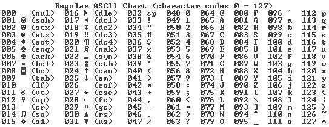

Op deze pagina word er uitgelegd over het binaire stelsel.
Het begrijpen van het binaire stelsel is essentieel voor het begrijpen van de werking van computers en andere digitale technologieën, aangeizen alle gegevens in de kern in binaire vorm worden weergegeven en verwerkt.
Het binairestelsel, ook wel het tweetallige stelsel, is een getalensysteem dat maar 2 cijfers gebruikt: de 0 en de 1.
In onse dagelijkse decimale stelsel gebruiken we cijfer die van 0 tot en met 9 gaan.
Het binairstelsel is essentieel voor de werking van computers en andere digitale technieken omdat computers werken met elektrische schakelingen die alleen twee mogelijke toestanden kunnen aannemen: aan = 1 en uit = 0
Nu gaan we wat dieper in op het binaire stelsel en de werking ervan.
1. Binaire cijfers:
In het binaire stelsel worden cijfers uitgedrukt in machten van 2, net zoals in ons decimale stelsel, daar worden de cijfers uitgedrukt in machten van 10.
Hier zijn enkele binaire cijfers en hun decimale equivalenten:
0 in binaire = 0 in decimaal
1 in binaire = 1 in decimaal
10 in binaire = 2 in decimaal
11 in binaire = 3 in decimaal
100 in binaire = 4 in decimaal
101 in binaire = 5 in decimaal
110 in binaire = 6 in decimaal
111 in binaire = 7 in decimaal
Hieronder ziet u een ASCII tabel

2. Binaire positiewaarde:
In het binaire stelsel heeft elk cijfer een positiewaarde due exponentieel toeneemt van rechts naar links.
De meest rechtste positie heeft een positiewaarde van 2^0(1), de volgende positie naar links heeft een positiewaarde van 2^1(2),
de daaropvolgende positie heeft een positiewaarde van 2^2(4) enzovoorts.
3. Bianire getallen noteren:
Om een binaire reeks te noteren wordt vaak een subscript '2' toegevoegd om aan te geven dat het een binaire notatie heeft.
bijvoorbeeld: 1010₂ geeft het binaire getal 1010 weer.
Als er geen subscript wordt vermeld, wordt het meestal aangenomen dat het getal in het decimale stelsel staat (het standaard stelsel)
4. Bites
Stel je voor, de wereld is een digitale bibliotheek is en informatie is het boek dat je wilt lezen.
In deze zogenaamde digitale bibliotheek zijn 'bits' de allerkleinste boodschappers die er zijn.
Ze kunnen maar 2 dingen zeggen 'ja'(1) en 'nee'(0).
Digitale informatie bestaat uit een reeks van bites.
Hoe meer bites er in een reek zijn hoe complexer en gedetailleerder de boodschap dus kan zijn.
Als je bijvoorbeeld 8 bites hebt kun je 256 verschillende boodschappen maken.
5. Bytes
Een byte bestaat uit een groep van 8 bites. Bytes geven ons de mogelijkheid om meer complexe informatie uit te drukken.
Een byte kan bijvoorbeeld een enkele letter, speciaal teken of cijfer vertegenwoordigen
Stel je nou eens voor dat 1 byte de letter 'A' is. Als je dan een macht van 8 bytes hebt (8x8=64) kunnen we dus een eenvoudige boodschap zoals HELLO vormen.
Dus: in de werelds digitale bibliotheek zijn bits kleine boodschappers die 'ja' of 'nee' fluisteren. Bytes zijn de woorden waarmee we de verhalen van het digitale tijdperk vertellen.
Smmen helpen ze ons om de digitale wereld te begrijpen.
Hieronder ziet u een embedded link naar Binary Bonanza, met deze embedded link kunt u zelf de werking van het bianire stelsel verder ontdekken.